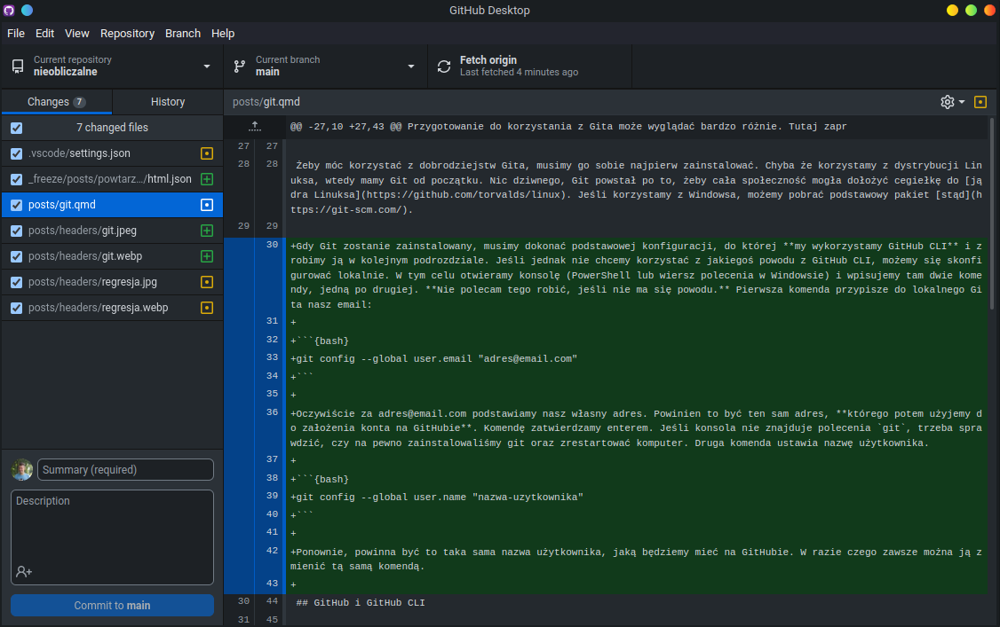
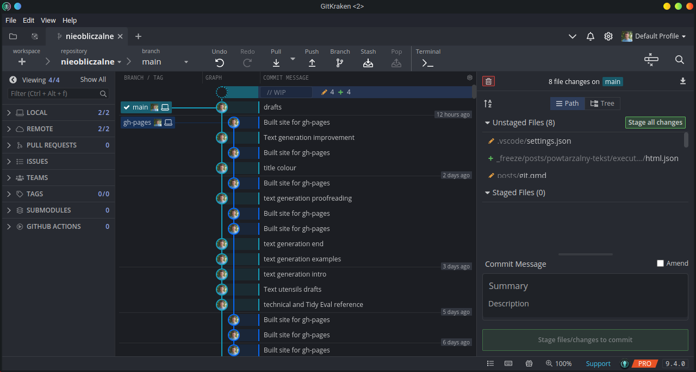
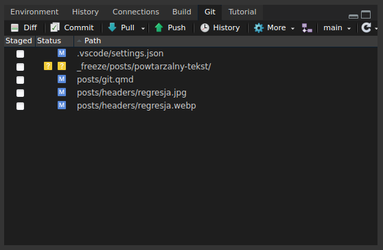
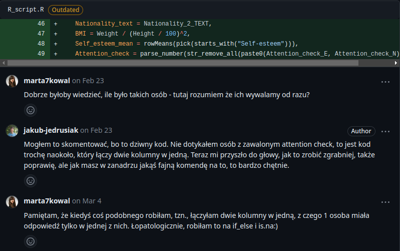

Jak wspólnie pisać analizę statystyczną?
Git, GitHub i integracja z RStudio
Kiedyś (a niekiedy do dziś) wspólne pisanie dokumentów czy prezentacji polegało na wysyłaniu sobie serii załączników mailem. Gdy zespół liczył więcej niż 2 osoby, kolejne wersje danego pliku szybko stawały się trudne do śledzenia. Podobnie gdy pisaliśmy coś na więcej niż jednym komputerze. Mam kolegę, który tak wysłał nie tę wersję pracy zaliczeniowej do prowadzącej. Nie znalazł zrozumienia. Te problemy w większości odeszły w niepamięć, gdy nastała era chmury i współpracy online. Znacznie wcześniej powstawały jednak inne rozwiązania – systemy kontroli wersji, spośród których praktyczny monopol zdobyło otwartoźródłowe dzieło Linusa Torvaldsa (twórcy Linuksa) o nazwie Git.
1 Systemy kontroli wersji
Systemy kontroli wersji najogólniej polegają na tym, że śledzą zmiany w plikach. Jeśli dopisaliśmy akapit do naszego pliku i zatwierdziliśmy tę zmianę, system kontroli wersji będzie wiedział kto i kiedy ten konkretny akapit dopisał. Jeśli kilku użytkowników wprowadziło zmiany, które ze sobą nie konfliktują, system kontroli wersji potrafi takie zmienione pliki połączyć w jeden. Możemy dzięki temu prześledzić historię danego pliku, a także upewnić się, że wszyscy pracują na najnowszej wersji.
Jednocześnie jest to zrobione w sposób dostosowany do pisania kodu. Gdy piszemy kod, wprowadzamy jakieś zmiany, testujemy, zazwyczaj nie działa, poprawiamy i powtarzamy aż nie zadziała. Jeśli mielibyśmy jeden wspólny plik, jak w Google Docs, nasze testy skutecznie uniemożliwiłyby wszystkim innym korzystanie z kodu. Dlatego właśnie Git wymaga od nas, żeby zmiany w kodzie zatwierdzać i dopiero wtedy możemy udostępnić je innym. Dzięki temu tworzy się balans między współpracą i niewchodzeniem sobie w paradę.
Powstaje nam więc stabilny workflow – wprowadź poprawki w kodzie, przetestuj, zatwierdź, opublikuj. Jak to zrobić w praktyce?
2 Przygotowanie
Przygotowanie do korzystania z Gita może wyglądać bardzo różnie. Tutaj zaproponuję serię programów, które, mam nadzieję, uczynią ten proces jak najbardziej bezbolesnym. Postaram się też do minimum ograniczyć potrzebę korzystania z konsoli.
2.1 Git
Żeby móc korzystać z dobrodziejstw Gita, musimy go sobie najpierw zainstalować. Chyba że korzystamy z którejś dystrybucji Linuksa, wtedy mamy Git od początku. Nic dziwnego, Git pierwotnie powstał po to, żeby cała społeczność mogła dołożyć cegiełkę do jądra Linuksa. Jeśli korzystamy z Windowsa, możemy pobrać podstawowy pakiet stąd.
Gdy Git zostanie zainstalowany, musimy dokonać podstawowej konfiguracji, do której my wykorzystamy GitHub CLI i zrobimy ją w kolejnym podrozdziale. Jeśli jednak nie chcemy korzystać z jakiegoś powodu z GitHub CLI, możemy się skonfigurować lokalnie. W tym celu otwieramy konsolę (PowerShell lub wiersz polecenia w Windowsie) i wpisujemy tam dwie komendy, jedną po drugiej. Nie polecam tego robić, jeśli nie ma się powodu. Pierwsza komenda przypisze do lokalnego Gita nasz email:
git config --global user.email "adres@email.com"Oczywiście za adres@email.com podstawiamy nasz własny adres. Powinien to być ten sam adres, którego potem użyjemy do założenia konta na GitHubie. Komendę zatwierdzamy enterem. Jeśli konsola nie znajduje polecenia git, trzeba sprawdzić, czy na pewno zainstalowaliśmy Git oraz zrestartować komputer. Druga komenda ustawia nazwę użytkownika.
git config --global user.name "nazwa-uzytkownika"Ponownie, powinna być to taka sama nazwa użytkownika, jaką będziemy mieć na GitHubie. W razie czego zawsze można ją zmienić tą samą komendą.
2.2 GitHub i GitHub CLI
Git to protokół działający lokalnie. Innymi słowy nasz własny Git jest w naszym własnym folderze i inni ludzie nie mają do niego dostępu. To jest OK, jeśli chcemy robić kontrolę wersji do własnego użytku. Jeśli jednak chcemy współpracować z innymi albo mieć dostęp do naszego kodu na różnych komputerach, potrzebujemy jakiegoś rodzaju usługi internetowej, z którą każdy może się połączyć, żeby mieć stały dostęp do aktualnej wersji. Podstawowym de facto hostingiem tego typu jest GitHub. To jest więc dobry moment, żeby wejść na GitHuba i założyć tam konto.
Szybkie wtrącenie, które może nam ułatwić życie w późniejszej konfiguracji RStudio. Warto jest w tym momencie wejść w ustawienia RStudio, tam w zakładkę Git/SVN i sprawdzić, czy RStudio podaje jakąś ścieżkę dla SSH key. Jeśli nie, klikamy „Create SSH key” i zatwierdzamy. Nie musimy wpisywać hasła.
GitHub dysponuje też wersją konsolową, GitHub CLI, która pozwoli nam bezboleśnie połączyć naszego lokalnego Gita z kontem na GitHubie. GitHub CLI pobieramy stąd. Po zainstalowaniu (i ewentualnym restarcie komputera) możemy dokonać konfiguracji. W tym celu otwieramy konsolę (PowerShell lub wiersz polecenia w Windowsie) i wpisujemy tam:
gh auth loginPo zatwierdzeniu komendy enterem powinien uruchomić się kreator, który bezboleśnie przeprowadzi nas przez proces logowania. Najpierw wybieramy, że chcemy się się logować do zwykłego GitHub.com. Przesuwamy się strzałkami, zatwierdzamy enterem. Następnie musimy wybrać protokół. Na ogół łatwiejszy do ogarnięcia jest HTTPS, jednak na potrzeby RStudio lepiej jest wybrać SSH. Jeśli wytworzyliśmy wcześniej klucz SSH w RStudio, GitHub CLI zapyta nas teraz, czy wysłać ów klucz na serwer. Tak, to jest dokładnie to, co chcemy zrobić. Następnie klucz tytułujemy jak chcemy (lub klikamy enter, jeśli odpowiada nam tytuł GitHub CLI). Dalej wybieramy logowanie za pomocą przeglądarki. W tym momencie wyświetli nam się ośmioznakowy kod, który powinniśmy skopiować. Jeśli chcesz użyć skrótu klawiaturowego, nie używaj Ctrl+C, bo wyłączysz GitHub CLI. Użyj Ctrl+Shift+C. Możesz też użyć myszki. Po kliknięciu enter otworzy nam się okno przeglądarki, gdzie wklejamy wcześniej skopiowany kod i zatwierdzamy.
W ten sposób dokonaliśmy konfiguracji GitHub CLI. Pozostaje nam jeszcze połączyć GitHub CLI z naszym lokalnym Gitem za pomocą prostej komendy:
gh auth git-setup2.3 GitHub Desktop i GitKraken
Domyślnie Git jest narzędziem konsolowym. Dla większości świeżych użytkowników jest to nie do przejścia. Sam widok okna terminala może wywoływać obfite pocenie, przyspieszenie akcji serca i wyrzut kortyzolu do krwi. Na szczęście istnieją przynajmniej dwa narzędzia, które mogą nam oszczędzić męki uczenia się poleceń konsolowych.
Pierwsze z nich to GitHub Desktop, który jest intuicyjnym programem pozwalającym nam na szybkie zarządzanie Gitem i synchronizację z GitHubem. Jest to narzędzie darmowe i otwartoźródłowe. Pozwala nam nie tylko zatwierdzać, wysyłać i odbierać zmiany, ale także możemy za jego pomocą zarządzać pull requests (więcej o tym później).

Druga możliwość to GitKraken. Potężne narzędzie do zarządzania Gitem z wieloma zaawansowanymi możliwościami jak wyświetlanie wykresów commitów i modyfikacje na miejscu. Niestety GitKraken to w wielu funkcjach program płatny, ale dostępny za darmo dla studentów i pracowników naukowych w ramach GitHub Education. Nie jest to jedyna korzyść płynąca z tego programu (inne to np. GitHub Copilot), także polecam się zainteresować. Wiele funkcji jest też dostępnych, jeśli nasze repozytorium jest publiczne.

Możemy wybrać dowolne z tych narzędzi, bo funkcjonalność mają podobną. Jeśli jednak mamy statuts studenta albo pracownika naukowego, polecam GitKraken o tyle, że pozwala dość łatwo rozwiązać specyficzne problemy. Tak czy inaczej, będą to dla nas raczej dodatkowe narzędzia, jeśli planujemy korzystać z Gita głównie do wspólnego pisania kodu R w RStudio, ponieważ RStudio ma już wbudowaną podstawową integrację z Gitem.
3 Podstawowe pojęcia
Gdy tworzymy projekt w RStudio, możemy zaznaczyć, żeby jednocześnie stworzyć repozytorium Git. Repozytorium to w pewnym sensie folder, w którym zgromadzony jest nasz kod. Co odróżnia zwykły folder z kodem od repozytorium Git? Głównie ukryty folder .git, który śledzi zmiany, jakie wprowadzamy w plikach. Jeśli nie zainicjowaliśmy repozytorium od razu, przy tworzeniu projektu, to żaden problem. Możemy to też zrobić później, wybierając opcję stworzenia repozytorium w naszym programie do zarządzania Gitem. Jeśli jest to repozytorium z kodem R, warto po utworzeniu repozytorium jednorazowo użyć w R komendy usethis::git_vaccinate(). Sprawi ona, że Git będzie ignorował pliki, których nie powinniśmy wysyłać na serwer ze względów głównie bezpieczeństwa.
Jeśli w RStudio otworzymy projekt, który ma założone repozytorium Git, zobaczymy w prawym górnym okienku zakładkę Git. W niej znajdziemy wylistowane pliki, które zmieniliśmy lub dodaliśmy od ostatniego razu. Możemy te pliki zaznaczyć, żeby przygotować zmiany do zatwierdzenia. Taki zatwierdzony zestaw zmian nazywa się commit i jest to też guzik, za pomocą którego ostatecznie dokonamy zatwierdzenia. Taki commit obowiązkowo musi zostać opatrzony skrótową wiadomością z opisem, co zmieniliśmy. Pierwsza linijka to informacja w kilku słowach, ale poniżej możemy dopisać więcej informacji. To samo możemy też zrobić z poziomu wybranego przez nas menedżera Gita.

Jak często robić commity? Albo raczej – ile musimy napisać kodu, żeby zrobić z tego commit? To już zależy od nas. Możemy z każdej działającej poprawki robić osobny commit, a możemy robić jeden wielki commit co jakiś czas. Lepiej jednak robić je częściej niż rzadziej. Częste commity mają tę zaletę, że jeśli pojawiłaby się potrzeba wycofania jakichś zmian, to musimy wycofywać całe commity. Tym samym jeśli mamy wielkie commity, możemy dużo stracić. Ostatecznie powinna nam przyświecać zasada, że jedna rzecz to jeden commit. Od nas jednak zależy, co uznamy za „rzecz”.
Domyślnie commity zapisują się tylko na naszym dysku twardym. Jeśli chcemy wysłać je na GitHuba możemy użyć guzika push w RStudio albo w menedżerze Gita. Żeby ta opcja była dostępna, musimy najpierw opublikować nasze repozytorium, co łatwo zrobić z poziomu GitHub Desktop czy GitKraken.
Przeciwieństwem push jest pull. Pull służy do pobrania zmian, które wcześniej my albo ktoś inny wysłaliśmy na serwer. Warto jest to robić często, przed rozpoczęciem pracy. Pull wymaga, żebyśmy już mieli repozytorium na dysku. Jeśli chcemy pobrać całe repozytorium, musimy je sklonować. Klonowanie najłatwiej wykonać z poziomu menedżera. W ten sam sposób możemy odwrócić cały proces i najpierw stworzyć repozytorium na github.com, a potem sklonować je na własny dysk.
Podstawowy workflow jest więc następujący:
Pull.
Piszemy kod i testujemy.
Commit.
Push.
4 Pliki specjalne
Repozytoria na GitHubie często mają kilka plików specjalnych, z których najważniejsze to README.md i .gitignore. Omówmy sobie oba.
4.1 .gitignore
Plik .gitignore to informacja dla Git, żeby pewne konkretne pliki albo rodzaje plików (np. wszystkie pliki .csv) ignorował. Innymi słowy, żeby nie krzyczał nam, że wykrywa taki plik i trzeba go śledzić. Podstawowe rodzaje plików, które w projektach R powinny zostać zignorowane, dodaje wspomniana już komenda usethis::git_vaccinate(). Jeśli tworzyliśmy repozytorium za pomocą RStudio, stosowny plik .gitignore powinien się już znajdować w repozytorium. Programy do zarządzania Gitem również potrafią nam przygotować taki roboczy plik podczas tworzenia repozytorium.
Uwaga! Domyślnie pliki i foldery z nazwami zaczynającymi się kropką są ukryte. Możemy odkrywać ukryte pliki skrótem klawiszowym Ctrl+H albo za pomocą menu Widok w Windows Explorer.
Plik .gitignore możemy otworzyć w dowolnym edytorze tekstu. Możemy też w RStudio użyć komendy usethis::edit_git_ignore(), która nam ten plik otworzy. Możemy dopisać tam nazwy lub ścieżki plików, które Git ma ignorować. Możemy też dopisać *.csv, żeby zignorować wszystkie pliki .csv. Gwiazdka * oznacza dowolne znaki. Możemy również dodawać pojedyncze pliki w R za pomocą komendy usethis::use_git_ignore().
4.2 README.md
Plik README to jest to, co wyświetla się, jak na GitHubie wejdziemy na stronę repozytorium. Możemy tam zapisywać podstawowe informacje dla odbiorców naszego repozytorium. Sam plik korzysta z formatowania GitHub Markdown, którego opis znajdziemy tutaj. Jeśli piszemy analizę w R, warto użyć komendy usethis::use_readme_md(), żeby taki wzorcowy przykładowy plik wytworzyć.
Dla kodu w R warto rozważyć, czy nie przerzucić się na plik README.Rmd wytwarzany przez usethis::use_readme_rmd(). Pozwala on do pliku README dorzucać np. bloki kodu R. Dla publicznego kodu to szczególnie cenne, bo możemy pokazać przykładowe działanie naszych funkcji. Wtedy edytujemy plik README.Rmd zamiast Readme.md, zaś przed samym wypchnięciem używamy funkcji devtools::build_readme(). Generuje to aktualną wersję z rozszerzeniem .md, którą GitHub potrafi odczytać. Więcej o składni w plikach R Markdown przeczytamy tutaj. Obecnie standard R Markdown jest systematycznie zastępowany przez Quarto, ale w chwili, gdy to piszę, usethis nie planuje go wdrażać. O możliwości korzystania z README.Rmd więcej napiszę we wpisie o pakietach. Kiedy już powstanie.
5 GitHub Flow, gałęzie, forks i pull requests
Na tym, co podałem wyżej, można jechać bardzo długo. By jednak dopełnić obrazu podstaw Git (bo Git może znacznie więcej, to naprawdę tylko liźnięcie powierzchni), musimy omówić sobie jeszcze trzy terminy.
Możemy stworzyć całe oddzielne wersje naszego programu, które mogą rozwijać się niezależnie. Noszą one nazwę gałęzi (branches). Po co nam coś takiego? Typowe zastosowanie to utrzymywanie na głównej gałęzi (zazwyczaj nazwanej main albo master) stabilnej wersji naszego programu, zaś rozwijanie go na oddzielnej gałęzi (zazwyczaj nazwanej dev). Dzięki temu użytkownicy cały czas mają dostęp do takiej wersji programu, która na pewno działa, zaś my możemy się bawić w środowisku, które z definicji może być niestabilne.
Między gałęziami możemy przeskakiwać za pomocą menedżera Gita albo bezpośrednio w RStudio. Tuż koło znaczka odświeżania znajdziemy wybierak gałęzi. Różowy guzik tuż obok pozwala nam wytworzyć nową gałąź. Takie nowe gałęzie również wymagają publikacji.
Gdy przychodzi czas, możemy nowości z gałęzi rozwojowej połączyć z gałęzią główną (merge) i w ten sposób np. wydać nową wersję naszego programu. W przypadku analiz statystycznych nie jest to tak bardzo użyteczne, ponieważ analiza statystyczna zazwyczaj jest do użytku wewnętrznego, więc nie potrzebujemy oddzielać wersji stabilnej od niestabilnej. Ponadto to zazwyczaj względnie prosty skrypt. Użyteczność gałęzi ujawnia się jednak w inny sposób, jeśli korzystamy w naszej pracy z GitHub Flow, czyli wizji tego, jak używać Gita, którą proponuje nam GitHub.
Zgodnie z GitHub Flow, osobną gałąź powinniśmy wytworzyć na każde zadanie do wykonania. Jest to pierwszy krok każdych zmian w kodzie. W warunkach analiz statystycznych, możemy wytwarzać takie gałęzie jak czyszczenie-danych, statystyki-opisowe czy modelowanie. Po pierwsze pozwala to na uniknięcie problemu, o którym mówiłem na początku – możemy przypadkiem zepsuć kod, a wtedy zepsujemy go dla wszystkich. Osobna gałąź sprawia, że główny kod jest bezpieczny. Drugi powód jest jednak znacznie ciekawszy.
Gdy już wykonamy swoją pracę na oddzielnej gałęzi, musimy scalić ją z główną gałęzią. Robimy to przez otwarcie pull request (widziałem kiedyś rozkazująco brzmiące polskie tłumaczenie „żądanie ściągnięcia”). Pull request to niejako wpis na „forum”, gdzie proponujemy nasz kod. Zazwyczaj opisujemy tam, co też zmieniliśmy w kodzie i dlaczego warto to scalić. Teraz nasz współpracownik (albo właściciel repozytorium) może przejrzeć nasze zmiany, dodać sugestie, skomentować nawet konkretne linijki w kodzie, a na koniec wystawić recenzję przyjmującą, odrzucającą bądź neutralną. W zależności od ustawień repozytorium taka recenzja może być konieczna, ale mogą to też dyktować wewnętrzne zasady (kodeks honorowy). Jeśli wszystko jest ok, można jednym kliknięciem scalić naszą roboczą gałąź z gałęzią główną (albo z gałęzią dev, a dopiero, jak się trochę tych zmian nazbiera, scalić dev z gałęzią główną).

Gdy dyskusje między współpracownikami zakończą się, a gałąź zostanie scalona, można ją spokojnie usunąć. Więcej o pracy z użyciem GitHub Flow można przeczytać tutaj.
Bardzo podobny schemat występuje, jeśli chcemy wprowadzić zmiany w cudzym kodzie. Cała filozofia Open Source polega na tym, że każdy może coś dopisać do programu. Nie oznacza to jednak, że właściciel danego repozytorium nie ma nad nim żadnej kontroli. Kontrolę zapewniają mu właśnie pull requests, które tylko on(a) może scalić z główną gałęzią. Na przykład każdy może poprawić moje literówki, jeśli jakieś tu znajdzie, zmieniając odpowiednie fragmenty w pliku .qmd w repozytorium tej strony. Jednak nie możemy zmieniać treści cudzych plików tak po prostu. Najpierw musimy wytworzyć własną kopię danego repozytorium, czyli fork. Możemy to zrobić jednym kliknięciem odpowiedniego przycisku na GitHubie. Do naszej kopii mamy pełny dostęp, także możemy robić commity. Gdy taki commit zatwierdzimy i wejdziemy stronę naszego forku na github.com (lub w menedżerze Gita), zostanie nam zaproponowane, żeby otworzyć pull request z naszymi zmianami. Gdy nasz pull request zostanie scalony, cały fork możemy skasować, jeśli nie planujemy dalszych zmian.
GitHub Flow to dobry standard, ale nadmiernie skomplikowany, jeśli nasze repozytorium jest małe, prywatne i/lub jednoosobowe. W takich repozytoriach możemy chcieć scalać nasze zmiany od razu z główną gałęzią, która często jest jedyna. Podobnie pilne zmiany, łatki bezpieczeństwa czy wręcz przeciwnie, minimalne zmiany, na które po prostu nie warto tworzyć nowej gałęzi.
6 Rozwiązywanie konfliktów
Przy scalaniu może się okazać, że nie jest ono możliwe. Na przykład dwie osoby zmieniły tę samą linijkę kodu (powiedzmy, że dodali biblioteki) i teraz Git nie wie, co z tym zrobić. Na ten moment GitHub nie jest taki mądry, żeby proponować sposoby scalenia konfliktujących plików1, także sami musimy zdecydować, czy zachować linijkę z jednej wersji, z drugiej wersji albo też ręcznie połączyć je w jedną.
GitHub sam nas poinformuje, że konflikt jest, w których jest linijkach, a także da nam możliwość ten konflikt rozwiązać. Jak to zrobić? Kasujemy wszystkie linijki, do których GitHub dodał <<<<<<<, ======= lub >>>>>>> i zapisujemy taką wersję kodu, jaką chcemy, żeby znalazła się w ostatecznej wersji. Na koniec klikamy „Mark as resolved” na górze edytora.
W przypadku pojawienia się konfliktów łatwiej jest rozwiązywać je za pomocą menedżera Gita niż na GitHubie.
7 Podsumowanie
Git to złożony temat, który tutaj tylko liznęliśmy. Mam jednak nadzieję, że takie liźnięcie wystarczy, by dostrzec zalety Gita, ogólną zasadę działania oraz być w stanie w podstawowy chociaż sposób ten standard wykorzystać. Głębszą wiedzę można zdobyć – standardowo – na StackOverflow, YouTube, a jeśli chcemy sięgnąć głębiej w meandry Gita, możemy przeczytać dostępną za darmo i w większości przetłumaczoną na język polski książkę Pro Git. Podsumujmy!
Git to system kontroli wersji, stworzony specjalnie do współpracy przy pisaniu kodu.
Podstawowym sposobem używania Gita jest GitHub Flow.
Najpierw tworzymy gałąź, na której chcemy napisać kod spełniający określony cel.
Piszemy zmiany w kodzie, które potem zatwierdzamy jako commits.
Commits wysyłamy na serwer za pomocą push i pobieramy z serwera za pomocą pull.
Gdy dokończymy dzieła, otwieramy pull request.
Jeśli wszystko jest OK, robimy merge.
W małych albo prywatnych repozytoriach zazwyczaj nie potrzebujemy wielu gałęzi ani pull requests. Szybkie i ważne poprawki też możemy od razu wrzucać na główną gałąź.